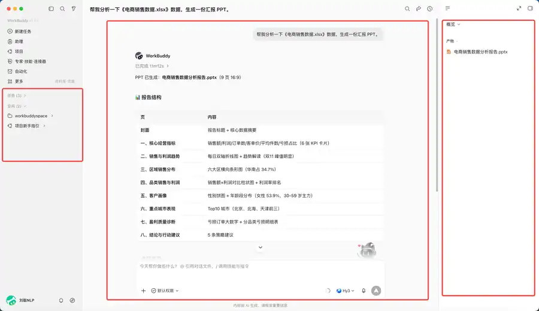
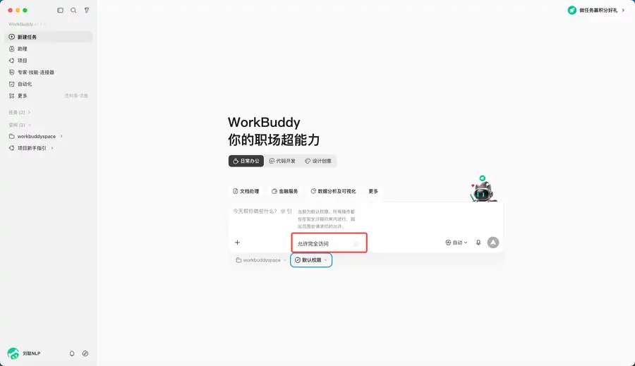
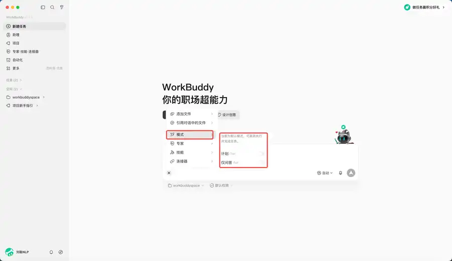
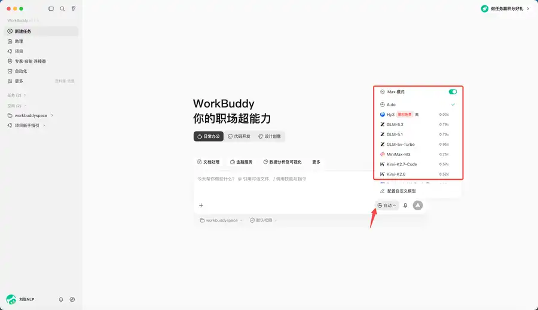

先计划，再制作一份创意市集招募通知记录；原始材料、运行结果和人工核验记录合在同一文档。
07_创意市集招募记录_姓名.docx
第二章｜智能体、Skill 与专家协作 · 第 7 次课 · 2 学时
认识桌面智能体的任务描述、计划确认与受控执行。
上一课知识回顾待补。
板块 ② 本节你将学会
先计划，再制作一份创意市集招募通知记录；原始材料、运行结果和人工核验记录合在同一文档。
07_创意市集招募记录_姓名.docx
思维导图和延伸练习不作为第二份必交作业；实际工具名称写进记录。
概念： 主界面可分为三个区域：左侧侧边栏用于新建、搜索、切换和管理任务；中间对话区用于描述需求、补充信息和追踪任务；右侧结果区用于查看产物、全部文件、变更和预览。
例子： 做创意市集招募通知时，先在左侧确认进入正确任务，再在中间粘贴材料，最后在右侧检查是否真的生成了可打开的文件。
记住： 任务名、目标与限制、文件名和改动，要在三个不同区域分别核对；“AI 已完成”不等于文件已符合要求。
想一想： 如果右侧只出现一段文字，没有文件，你还要完成什么检查？
概念： “任务”是一次对话和操作的记录；“工作区”是该任务对应的操作目录。设置工作区后，任务在指定目录内处理材料；未设置时，任务会在默认目录运行。按任务建立独立工作区，能减少材料混用、误读和误改。
例子： 本课只使用“创意市集招募”模拟材料，不把个人照片、真实学生名单或其他课程文件放进同一任务。
记住： 工作区既提高整理效率，也是安全边界。能限定目录就不要开启“完全访问”；本课只使用教师提供的模拟材料，目录之外的真实文件不作为操作对象。
想一想： 为什么不能把所有课程材料都放进一个任务目录？
概念： Ask（问一问）用于问答、理解和查看，不修改文件；Craft（做一做）可直接操作本地文件、运行代码或系统指令，适合路径清楚、风险较低的任务；Plan（想一想）先生成计划，确认后再执行，适合多步骤、跨系统或重要文件任务。
例子： 创意市集招募通知先用Plan列出“读取材料—生成草稿—核对事实”；本课不发送、不发布、不移动或删除真实文件。
记住： 选择模式要看任务风险，不是哪个模式“更厉害”。
想一想： 如果只需了解活动要求，选哪种模式更合适？
概念： 一般可先使用自动模式；需要时再按任务特征选择模型。长资料要关注上下文长度，图片和截图要有视觉理解能力，高频简单任务要兼顾响应速度与成本；不同模型的资源消耗可能不同。
例子： 本课是短文本模拟材料，保持默认即可；若改为核对一张设备照片或界面截图，再确认所用模型是否具备视觉理解能力。
记住： 学生不需要为完成本课反复切换模型，先保证任务、材料和检查项清楚。
想一想： 只有一张界面截图需要理解时，应优先关注模型的哪项能力？

| 区域 | 本课用途 | 先检查什么 |
|---|---|---|
| 侧边栏 | 确认或新建创意市集招募任务 | 是否进入正确任务 |
| 对话区 | 粘贴材料并要求先给计划 | 目标、范围和限制是否完整 |
| 结果区 | 查看回复、文件与修改结果 | 文件名、路径和事实是否符合要求 |

确认任务区域 → 限定工作区 → 选择“先计划”方式 → 核对结果与文件
指出本次实操中对应的一步，不需要另外画图提交。
核心案例｜实训器材预约：先选模式，再审查计划
课堂模拟材料：对照图3，判断这项任务应如何进行。模拟材料：摄影小组拟借2台相机，借用日期待确认，只需形成预约申请草稿。材料保存在教师提供的“器材预约”模拟工作区。
这项任务有“整理材料—写草稿—核对缺失信息”三个步骤，应先选Plan，要求先给计划；不选Craft直接操作文件，也不需要只用Ask停留在问答。
AI给出的计划若含“替你提交预约”，就超出“只写草稿”的范围；借用日期缺失也不能猜测。应改为“标注【待确认】，由学生核对”。
整理用途和数量 → 生成申请草稿 → 标注借用日期【待确认】。计划通过后才生成文字，最终文件仍由人保存和检查。

接下来将方法用于板块⑤的新任务，保留你自己的实际运行与核验结果。
保存文件： 07_创意市集招募记录_姓名.docx
依次查看本页图1—图4，在文档中补全四句话。每句话只写一行，不需要另交图片或新建文件。
自查： 四句均填写后，再进入下面的通知制作。不会操作工具时，也可以仅根据图示完成判断，再与同桌共同运行一次。
【课堂模拟，不能作为真实活动通知发布】 活动：校园创意市集摊主招募 对象：有手作、设计或闲置改造作品的学生 时间：2026年9月18日15:00 地点：大学生活动中心前广场 参与：现场提交摊位主题和作品类别 雨天：改到大学生活动中心一楼大厅 联系人：未提供
提示词 1 ：内容已含模拟材料，直接复制发送；不要删掉材料。
请为校园创意市集摊主招募准备通知。先不要写正文，只根据下方模拟材料列出需要确认的信息和准备执行的3个步骤。只制作草稿，不发送、不发布、不移动或删除文件。 【课堂模拟，不能作为真实活动通知发布】 活动：校园创意市集摊主招募 对象：有手作、设计或闲置改造作品的学生 时间：2026年9月18日15:00 地点：大学生活动中心前广场 参与：现场提交摊位主题和作品类别 雨天：改到大学生活动中心一楼大厅 联系人：未提供
提示词 2 ：确认第一步的计划后，直接复制发送；材料再次附上，避免遗漏。
计划已核对。请按下方材料生成150字以内通知，联系人写【待确认】，不要新增日期、地址、报名网址。最后列出需要我核对的5项内容。 【课堂模拟，不能作为真实活动通知发布】 活动：校园创意市集摊主招募 对象：有手作、设计或闲置改造作品的学生 时间：2026年9月18日15:00 地点：大学生活动中心前广场 参与：现场提交摊位主题和作品类别 雨天：改到大学生活动中心一楼大厅 联系人：未提供

新建WPS文档，复制下面的模拟材料，分成“已知”和“待确认”两部分；联系人必须留为待确认。
发送第一条提示词，保存实际回复。使用WorkBuddy时，先确认自己处于正确任务的对话区；使用豆包时，先新开一个空白对话。本节不要求打开完全访问，也不要求更改模型。
圈出读取什么、生成什么、是否发送。若出现自动发送或补编联系人，要求删掉该动作；没有问题则写“通过，因为只生成草稿”。
把模拟材料和第二条提示词一起发给AI。逐项核对时间、地点、方式、雨天安排和联系人；有错先在WPS修正。
把原要求、计划、审查意见、通知和核验结果放进同一文档；按规定名称保存并重新打开。
如果AI直接写正文，补发“先只给计划”，保留这次纠错。如果网络不可用，与已登录同桌共用一次运行，独立写自己的审查意见；全班均不可用时先写纸面计划并标注运行待补。
姓名： 实际使用工具： 输入材料：见上方已保存材料 运行结果：按步骤分别粘贴，不只写“完成” 我核对的字段或动作： 发现的问题／本轮未发现问题的依据： 同桌指出的一点： 修订或确认结果： 最终文件名：07_创意市集招募记录_姓名.docx
有余力再试： 给相同通知增加“只面向一年级学生”，先说出需要修改的字段，再验证AI是否只改对象。
下一节《Skill：给AI装操作手册》继续学习如何把要求变成可检查的成果。